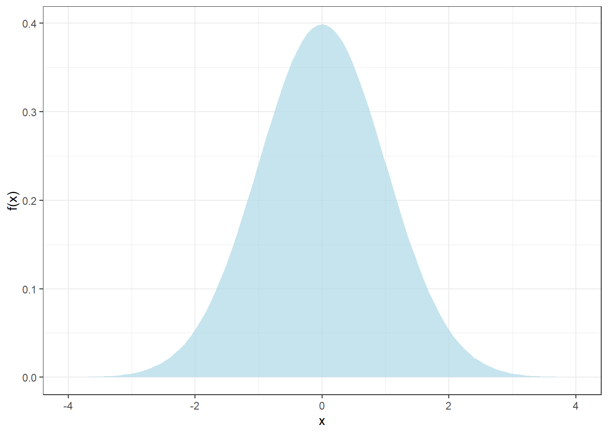
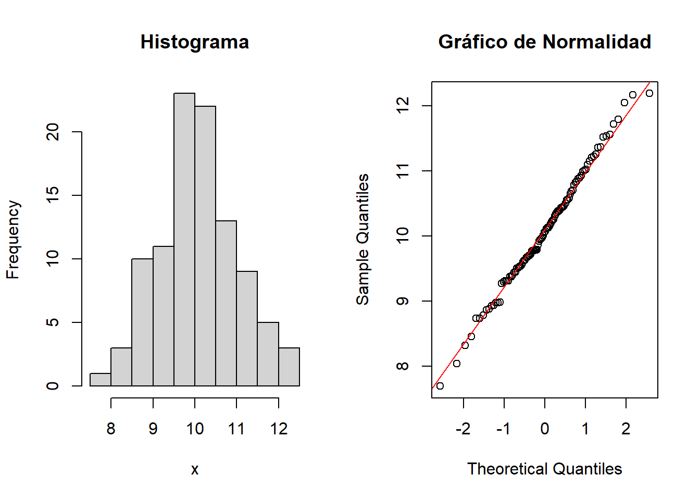
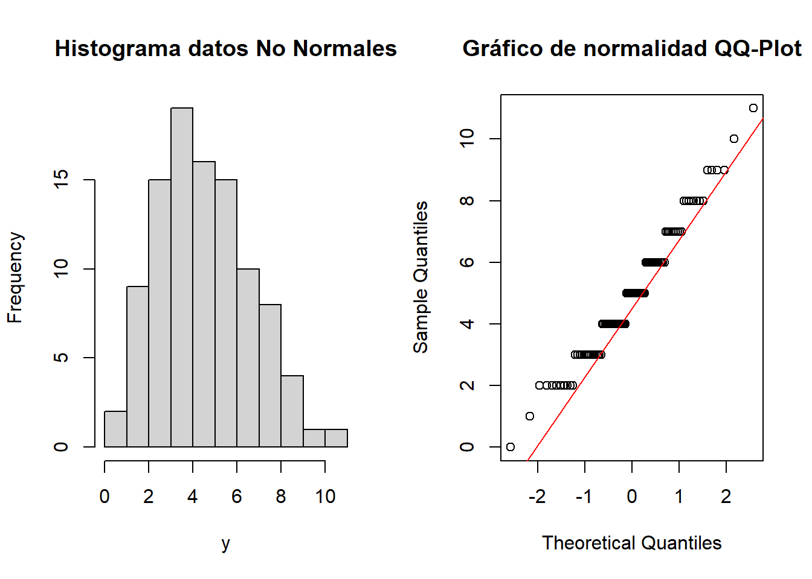
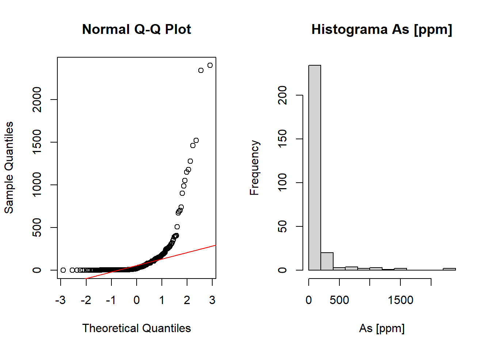
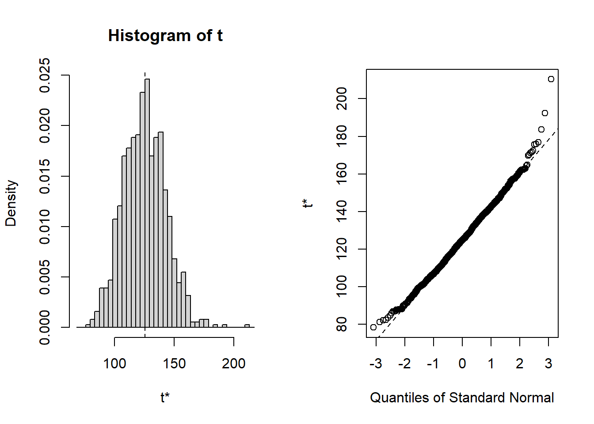

¡Mis datos no son normales! ¿Qué hago?…Cálmese, nunca lo fueron… ni lo serán
Bueno, aquí va la primera piedra:
No existen datos experimentales normales
Sus datos obtenidos en el laboratorio no “siguen” ninguna distribución de probabilidad. La naturaleza no “sigue” ninguna distribución de probabilidad.
La Normalidad es sólo una abstracción, es un modelo matemático de un fenómeno aleatorio.
Y como todo modelo, podría ser razonable para un conjunto de datos y totalmente equivocado para otro. Somos nosotros, los químicos/científicos, quienes proponemos modelos del sistema que estamos estudiando y a través de la experimentación corroboramos o no estos modelos.
Todos los tests estadísticos formales para evaluar la normalidad tampoco responden en forma 100% certera si esta hipótesis es válida, pues están afectos a los errores de tipo falso positivo (I) y falso negativo (II). Por lo tanto, las pruebas estadísticas en la práctica no confirman que los datos experimentales sean Normales, sino que nos indican si el modelo Normal es razonable o no. Si lo es, actuamos como si “fuesen” normales y hacemos inferencia estadística a partir de las propiedades de la Normal.
El modelo Normal se describe en la ecuación 1 y la figura @ref(fig:plotnormal) muestra la archiconocida forma de campana:
\[ f(x) = \frac{1}{\sigma \sqrt{2\pi}}\exp{-\frac{1}{2}\left(\frac{x - \mu}{\sigma}\right)^2} \tag{1}\]
donde \(\sigma\) y \(\mu\) son la desviación estándar y media, respectivamente. Notar que la distribución Normal es aplicable sólo a variables continuas, tales como concentración, temperatura, masa, etc. No se puede aplicar la distribución normal a variables discretas como cuentas de células bajo un campo de microscopio, por ejemplo. Quizás algún microbiólogo está familiarizado con el uso de logaritmos en sus cálculos de incertidumbre, bueno, es porque se utilizan otros modelos de probabilidad para datos discretos (ufc), como el modelo Poisson.
Advierta también, que los posibles valores que puede tomar la variable \(X\) están en el no despreciable rango entre \(-\infty\) y \(+\infty\). ¿Ha comprado algún estándar de calibración cuyo certificado indique una pureza de \(99.7 \pm 0.5\) %? Raro ¿no? Bueno, pues el proveedor ha aplicado equivocadamente la distribución Normal a una variable que no es Normal: pureza química. En efecto, desde el punto de vista químico la pureza está confinada al intervalo \([0, 100]\) %, por lo tanto, no tiene sentido químico un certificado que indique \(99.7 \pm 0.5\) %. Para modelar pureza química es necesario utilizar una distribución de probabilidad que esté restringida al intervalo \([0, 100]\) % (o \([0, 1]\)) como, por ejemplo, la distribución Beta.
Existen varios test para evaluar la palusibilidad de la normalidad de los datos, pero en este post discutiremos sólo dos de ellos: El test de Shapiro-Wilk y el Test de Anderson-Darling.
La matemática detrás de estos tests no es muy digerible, por lo que simplemente los ejemplificaremos con algunos datos reales y simulados. La ventaja de usar simulaciones es que “creamos” artificialmente datos de la distribución que se nos plazca y así verificar el desempeño de estos tests. Si recuerda, ya habíamos utilizado la simulación cuando revisamos las pruebas de linealidad en este post.
Antes de hacer cualquier prueba estadística de normalidad grafique los datos, a través de un histograma y un gráfico de probabilidad Normal
Estos gráficos le darán una primera aproximación para evaluar el supuesto de normalidad. Todos los softwares estadísticos incorporan estos gráficos. A continuación los veremos en acción en datos normales simulados en lenguaje R, qué otro. El siguiente es el código para llevar a cabo esta simulación de \(n = 100\) datos normales:
set.seed(123) # Con este comando nos aseguramos de generar siempre
# los mismos datos aleatorios. Sino, obviamente, todos
# generaríamos números distintos pues son aleatorios ¿no?
n <- 100 # Número de datos a simular
mu <- 10 # Media de los n = 100 datos
sigma <- 1 # Desviación estándar de los n = 100 datos
# Genera 100 dato normales con media mu y desviación estándar sigma
# y guárdalos en el vector llamado x
x <- rnorm(n, mu, sigma)Al calcular la media y desviación estándar (muestral) de estos datos obtenemos \(\overline{x} = 10.1\) y \(s = 0.9\) “¿Pero cómo? ¿No habíamos simulado una media de 10 y desviación estándar 1? Esto es una estafa” Keep calm recuerde que son aleatorios. La figura 1 muestra a la izquierda el histograma y a la derecha el gráfico de normalidad (QQ-Plot) de los datos simulados:

El histograma muestra esa forma de campana característica de la distribución normal. Quizás no conozca el gráfico de probabilidad normal o QQ-Plot, pero es la primera evidencia que un estadístico revisa para evaluar la hipótesis de normalidad. Note que la “mayoría” de los datos está sobre una línea diagonal roja, cuando Ud. observe este patrón podría concluir que el modelo normal es razonable o adecuado para modelar sus datos.
¿Son concluyentes estos gráficos? No, en absoluto. Simplemente muestran que la normalidad es una hipótesis plausible.
Recuerde que estos datos son simulados, por lo tanto, era esperable este comportamiento. Pero sus datos experimentales son “reales”, a priori no sabe qué comportamiento podrían evidenciar, sólo puede plantear una hipótesis.
Apliquemos ahora los test “formales” de linealidad: test de Shapiro y test de Anderson. Ambos tests intentan evaluar la hipótesis nula \(H_{0}\) que los datos provienen de una distribución Normal:
library(nortest) # Cargamos esta librería que contiene varios test de
# Normalidad, entre ellos Anderson-Darling
# Test de Shapiro-Wilk (no requiere librería nortest)
shapiro.test(x)
Shapiro-Wilk normality test
data: x
W = 0.99388, p-value = 0.9349# test de Anderson-Darling
ad.test(x)
Anderson-Darling normality test
data: x
A = 0.182, p-value = 0.9104La interpretación tradicional de las pruebas de hipótesis sería más o menos la siguiente:
Ya que el p-value > 0,05, entonces, no hay evidencia para rechazar la hipótesis de normalidad de los datos. ¿Se conluye, entonces, que los datos son normales? No. Simplemente, no tenemos la evidencia para rechzar la hipótesis.
Por lo tanto, no es que los datos sean normales, sino que la hipótesis de normalidad es razonable, por lo que actuaremos como si fuese cierto. Obviamente, estos resultados eran esperables pues hemos “creado” datos normales, pero recuerde que sus datos son “reales”, no simulados. Hay otras consideraciones de las pruebas de hipótesis que no mencionaremos por espacio, pero que un post futuro discutiremos en profundidad. Especialmente, esta perversa dicotomía del p-value < ó > 0,05 de la cual ya hicimos mención en este post.
“The p-value was never intended to be a substitute for scientific reasoning” Ron Wasserstein, Director Ejecutivo de la Asociación Americana de Estadística ASA.
Nota: Para tamaños de muestra grandes (\(n > 1000\)), una pequeña desviación de la normalidad hará que los tests estadísticos acusen No Normalidad
Cuando nos referimos a “actuar como si fuese cierto”, estamos diciendo que todos aquellos procedimientos estadísticos que suponen normalidad de los datos, funcionarán de acuerdo a la teoría. ¿Cuáles son estos métodos estadísticos que requieren normalidad de los datos?:
- Test de Student en todas sus variantes (es un test de sesgo)
- Test de Fisher para comparar varianzas (precisión analítica de 2 métodos)
- Curva de calibración lineal
- Máxima diferencia tolerable entre duplicados de análisis, discutido aquí
- Análisis de varianza para evaluar varios métodos analíticos o analistas
- Intervalos de confianza para la media de concentraciones.
- Incertidumbre de métodos analíticos. El \(k = 2\) asume normalidad de las concentraciones.
- … y un largo etc.
Ok, es cierto, a medida que aumenta el \(n\) la suposición de normalidad es cada vez menos relevante. De hecho algunos de los tests mencionados arriba son más o menos “robustos” a la suposición de normalidad.
¿Qué observaríamos si la hipótesis de normalidad fuese totalmente inverosímil para modelar nuestros datos?
Simulemos ahora datos no normales y veamos cuáles son los resultados tanto de los gráficos exploratorios como de las pruebas estadísticas formales:
# Simularemos m = 100 datos discretos de una distribución Poisson
set.seed (123) # Para que pueda reproducir los datos
m <- 100 # m = 100 datos
lambda <- 5 # Parámetro de la distribución Poisson
# Generar m = 100 datos de una distribución Poisson con parámtro lambda = 5
y <- rpois(m, lambda)
{{% callout warning %}} ¿No les parece familiar el QQ-Plot a aquellos que validan homogeneidad de peso en validación de procesos farmacéuticos? 1313{{% /callout %}}
La evidencia de los gráficos es abrumadora, los datos no son normales. Esto concuerda con lo que muestran los tests estadísticos de normalidad:
# Test de Shapiro-Wilk (no requiere librería nortets)
shapiro.test(y)
Shapiro-Wilk normality test
data: y
W = 0.97077, p-value = 0.02531# test de Anderson-Darling
ad.test(y)
Anderson-Darling normality test
data: y
A = 1.2355, p-value = 0.003072Como era esperable, ambos tests confirman que la hipótesis de normalidad no es razonable para modelar los datos(p-value < 0,05)
Si mis datos no son normales, entonces ¿Cómo los analizo?
Tranquilo(a), el mundo sigue girando. Existen varios métodos estadísticos que Ud. puede utilizar para analizar datos donde la hipótesis de normalidad no es razonable o se ha demostrado empíricamente que no es :
- Bootstrap: Utilizado, entre otros propósitos, para obtener intervalos de confianza para datos no normales.
- Tests no paramétricos: Análogos a las pruebas paramétricas tradicionales (Test T, ANOVA, etc.)
- Tests de permutaciones: También son una excelente alternativa a las pruebas paramétricas tradicionales y funcionan, incluso, para conjuntos pequeños de datos. Son tests “exactos”, pero necesitan que Ud. disponga de un buen “tarro” (computador) pues son computationally-intensive methods.
- Modelos lineales generalizados: Idóneos para modelar datos discretos como cuentas de células (leucocitos, ufc, etc.) o variables dicotómicas (Conforme/No Conforme), etc.
- Transformación de datos: Especialmente útiles son la transformación de Johnson y la de Box-Cox.
- Estadística Robusta: No tan sólo son útiles para minimizar el efecto de valores anómalos (outliers), sino también para obener estimadores de datos que no son normales.
Para finalizar veamos en acción uno de estos métodos: Bootstrap. Sin embargo, el detalle estadístico y su implementación los veremos en otro post, por ahora, simplemente lo ejemplificaremos. La figura 2 muestra el histograma y el QQ-Plot de normalidad correspondientes a datos de concentración de arsénico [ppm] muestreados en \(n = 271\) pozos de agua en Bangladesh:

Claramente, ni si quiera es necesario hacer un test de normalidad, la evidencia que muestra la figura 2 en contra de la hipótesis de normalidad es abrumadora. El promedio de la concentración de As es \(\overline{x} = 125\) ppm y la desviación estándar \(s = 298\) ppm. Utilizando la fórmula usual para estimar un intervalo de confianza al 95% para la media \(\overline{x} \pm t_{\alpha/2, n - 1} s/\sqrt{n}\) obtenemos [90, 161] ppm As. Sin embargo, la gran asimetría de los datos hace inverosímil el intervalo obtenido.
Al aplicar el método bootstrap obtenemos un intervalo para la media al 95% (BCa) entre [95, 164] ppm As, el cual es más “correcto” por si Ud. necesita informar este parámetro. La figura 3 muestra el histograma y QQ-Plot de normalidad de el método de bootstrap. Advierta el Teorema Central del Límite en su máxima expresión.

Bueno estimado lector, nos vemos pronto. Saludos.
Bibliografía
Ghasemi A, Zahediasl S. Normality Tests for Statistical Analysis: A Guide for Non-Statisticians. International Journal of Endocrinology and Metabolism. 2012;10(2):486-489. doi:10.5812/ijem.3505.
Henry C. Thode Testing For Normality CRC Press 2002